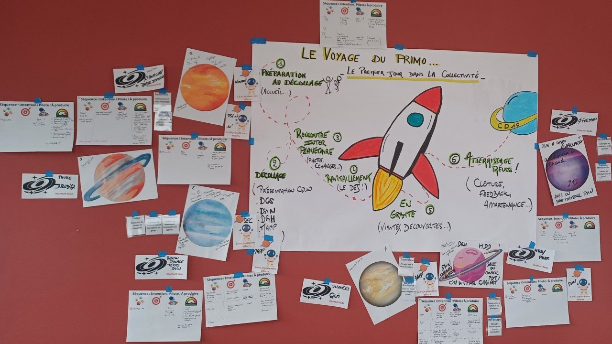
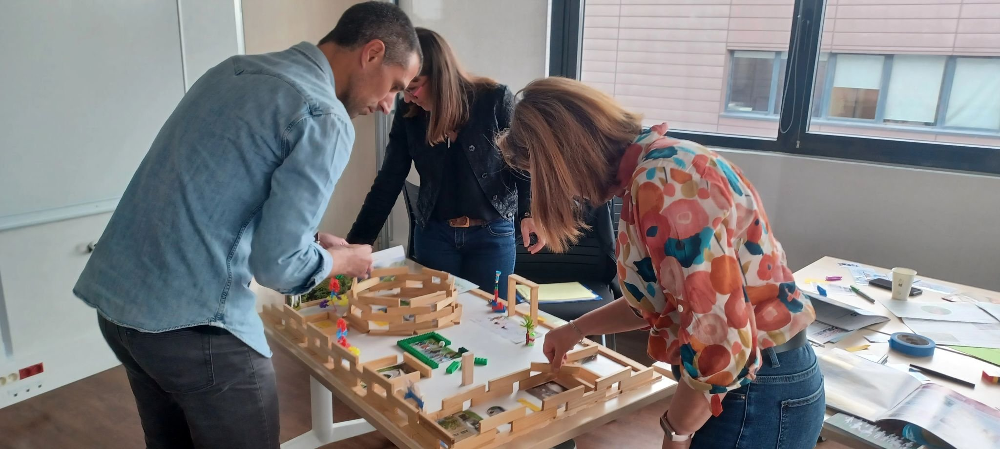
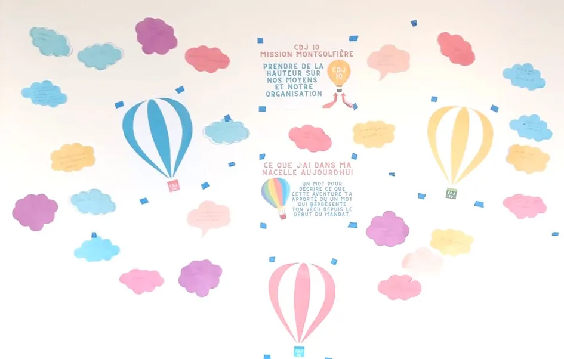
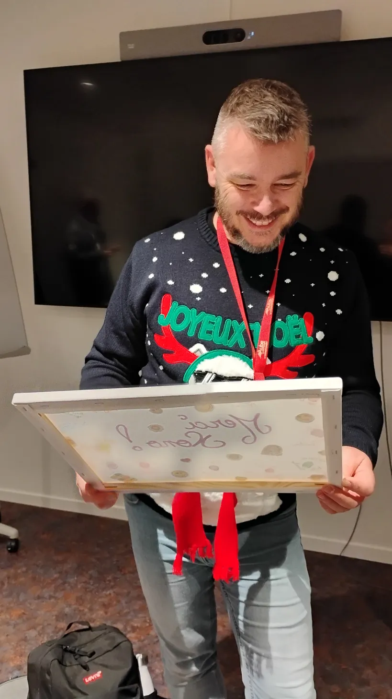

Des formations vivantes, visuelles et concrètes pour développer la coopération, les compétences collectives et le pouvoir d'agir - ancrées dans une pratique de terrain quotidienne.
Je ne forme pas depuis un pupitre. Chargé de mission Innovation Managériale au CD10, j'accompagne chaque jour des agents dans leurs dynamiques de projet, de management et de cohésion. Ce terrain nourrit en permanence ma posture de formateur.
Je travaille sérieusement en amont - pour designer chaque atelier, chaque formation selon la commande, le contexte, le collectif. C'est ce travail de fond qui me libère ensuite pour naviguer avec agilité : m'adapter à la dynamique du groupe, aux besoins individuels, à l'énergie du moment.
Avant les outils, je travaille avec les participants sur les postures : écoute, présence, rapport au groupe et à l'incertitude. Et j'utilise les métaphores et les univers visuels pour embarquer - la montgolfière, le cap, le vol... pour que chacun entre dans l'expérience à sa façon.
En savoir plus sur mon parcoursChaque formation est designée en amont pour coller à votre commande, votre contexte, votre collectif.
La préparation sérieuse libère l'agilité : je navigue selon la dynamique du groupe et les besoins du moment.
Univers visuels, métaphores, récits - pour embarquer chaque participant à sa façon et donner du sens collectivement.
Avant les outils, je travaille avec les participants sur leur posture : écoute, présence et rapport au collectif.
Quatre parcours conçus à partir de situations réelles, pour des professionnels qui veulent des outils immédiatement opérationnels.
Découvrir, expérimenter et maîtriser les outils de la facilitation et de la coopération.
Découvrir →S'approprier la carte mentale comme outil de facilitation, de synthèse et de communication au quotidien.
Découvrir →Animer des temps de travail engageants, structurer la parole collective, faire émerger les idées.
Découvrir →Accompagner les équipes de direction dans leurs dynamiques collectives et leurs projets.
Découvrir →Lego, Kapla, métaphores, musées éphémères... Des ateliers qui se vivent autant qu'ils se voient.




Tu as fait un super travail : la journée a été particulièrement enrichissante et très agréable à suivre. J'ai vraiment apprécié l'ambiance que tu as su instaurer ainsi que la qualité de ton animation, à la fois dynamique et accessible. Cela donne envie de mettre rapidement en pratique !
Angélique - CD10 · Formation intelligence collectiveUn outil simple et rapide pour trouver le bon format d’animation selon votre objectif, la durée et la taille du groupe.
Découvrir l’outilDes formats conçus pour remettre de l'énergie, de la clarté et du collectif dans les apprentissages.
Parlons de votre projet →